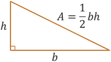
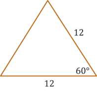

The Unit Circle
Trigonometric Functions
Trigonometric Functions
You should already be familiar with the formula \(A = \frac{1}{2}bh\) which gives the area of a right triangle given the length of its base \(b\) and height \(h\).
By applying what we know about our trignometric functions, we are no longer restricted to only finding areas of right triangles. We can find the area of any triangle given the right information.
Consider the acute and obtuse triangles illustrated below, and let's assume we know the lengths of the two sides \(a\) and \(b\) as well as the angle \(\theta\) between them. For the acute triangle, we could draw a vertical height \(h\) extending from side \(b\) up to the top vertex of the triangle forming a right triangle inside the original acute triangle. Then side \(h\) becomes the opposite side from \(\theta\) and \(a\) is the hypotenuse. Applying our right triangle trig SOHCAHTOA, we get the relationship that \(\sin(\theta) = \frac{h}{a}\) which can be rewritten as \(h = a\sin(\theta)\).
For the obtuse triangle, we can basically do the same thing, but we need to extend the base edge of the triangle outward to form a right triangle that is beside the original obtuse triangle. For the obtuse angle \(\theta\), there is a supplementary acute angle \(\bar{\theta}\) inside the new right triangle where \(h\) is the opposite side and \(a\) is the hypotenuse. The angle \(\bar{\theta}\) is the reference angle for \(\theta\), and so \(\sin(\bar{\theta}) = \sin(\theta)\). This means that we again get the relationship \(h = a\sin(\theta)\).
If we use this to substitute \(a\sin(\theta)\) in for \(h\) in the above area equation, then we get the following formula. Note that this works for acute and obtuse triangles because both resulted in the same relationhsip \(h = a\sin(\theta)\).
Given the lengths \(a\) and \(b\) of two sides of an oblique (non-right) triangle and the angle \(\theta\) between these sides, the area of the triangle can be computed using the following formula.
\[A = \frac{1}{2}ab\sin(\theta)\]Example: Find the area of an equilateral triangle with sides that are 12 inches in length.
The sides of an equilateral triangle are all the same length, and the angles are all 60° (because the sum of the angles of a triangle is 180°).
Using the new area formula above, we get the following.
\[\begin{align*} A &= \frac{1}{2}ab\sin(\theta) \\ &= \frac{1}{2}(12)(12)\sin(60^{\circ}) \\ &= \frac{1}{\cancel{2}}(\cancel{12})(\cancel{12})\left(\frac{\sqrt{3}}{\cancel{2}}\right) \\ &= (6)(6\sqrt{3}) \\ &= 36\sqrt{3} \end{align*}\]We can simplify the expression by reducing the \(\frac{1}{2}\) with one 12 and reducing the other 12 with the \(\frac{\sqrt{3}}{2}\). We get the final result that the area of the equilateral triangle is \(36\sqrt{3}\) square inches.
©2025 M4thG33x (new window) Some Rights Reserved.